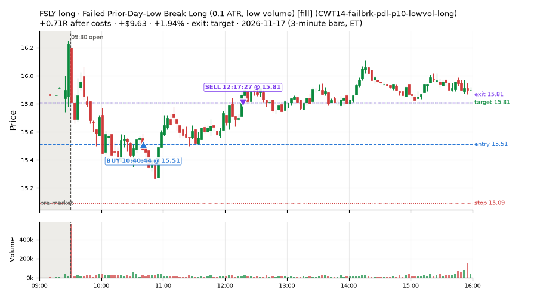
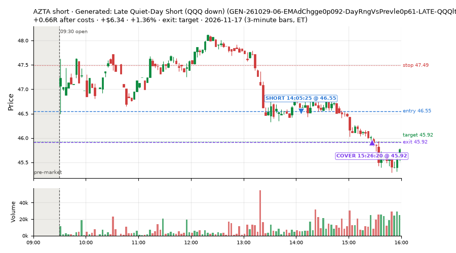
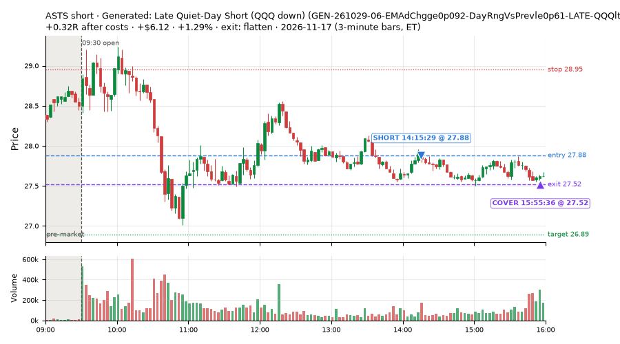
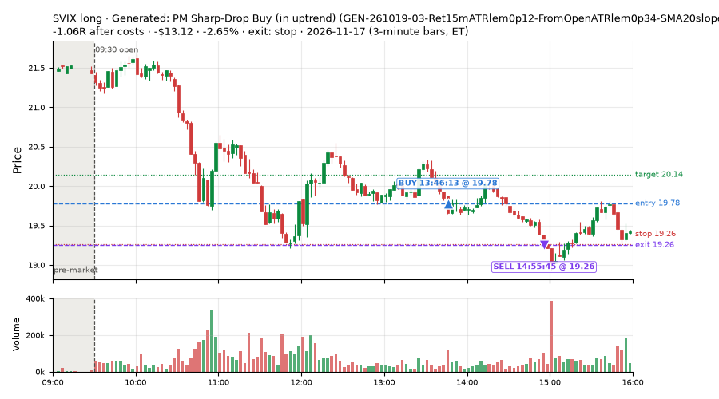
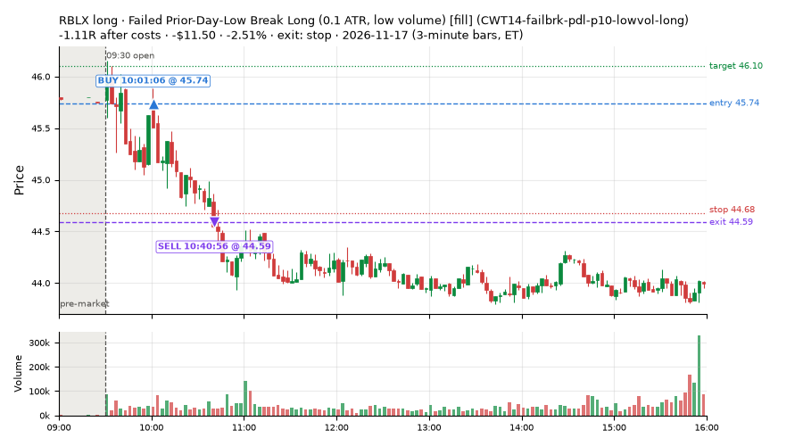
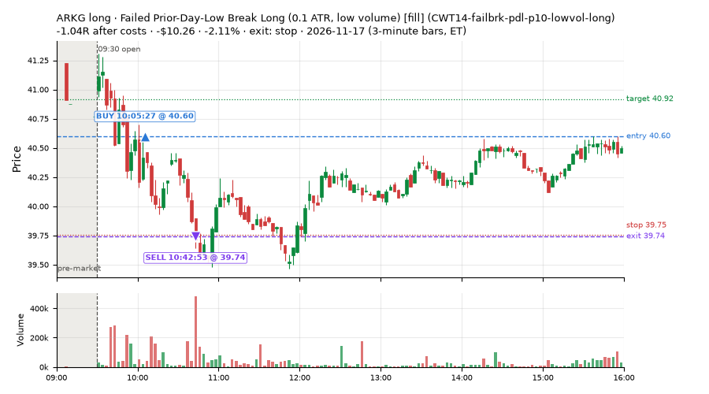
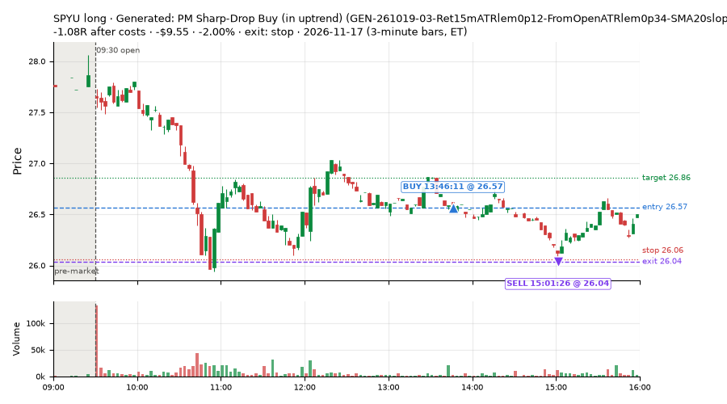
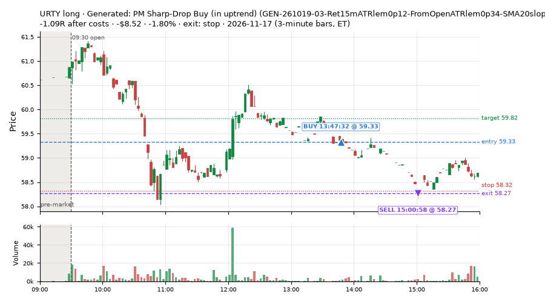

110 trades · win rate 45% · P/L $-131.88
PROBATION: no live setup has passed both locked test periods. 10 owner-directed setups added 2026-10-08 (MarcoFlow top 5 + 5 new), untested live. RW6G1 (RW6 + VWAP band guard) added 2026-10-09, probation.

| Symbol | Setup | Side | In | Out | Entry | Exit | Exit reason | % gained | P/L |
|---|---|---|---|---|---|---|---|---|---|
| FSLY | Failed Prior-Day-Low Break Long (0.1 ATR, low volume) [fill] (CWT14-failbrk-pdl-p10-lowvol-long) | long | 10:40 | 12:17 | 15.51 | 15.81 | target | +1.94% | $9.63 |
| AZTA | Generated: Late Quiet-Day Short (QQQ down) (GEN-261029-06-EMAdChgge0p092-DayRngVsPrevle0p61-LATE-QQQltm0p3-t1s1-short) | short | 14:05 | 15:26 | 46.55 | 45.92 | target | +1.36% | $6.34 |
| ASTS | Generated: Late Quiet-Day Short (QQQ down) (GEN-261029-06-EMAdChgge0p092-DayRngVsPrevle0p61-LATE-QQQltm0p3-t1s1-short) | short | 14:15 | 15:55 | 27.88 | 27.52 | flatten | +1.29% | $6.12 |
| Symbol | Setup | Side | In | Out | Entry | Exit | Exit reason | % lost | P/L |
|---|---|---|---|---|---|---|---|---|---|
| SVIX | GEN-261019-03-Ret15mATRlem0p12-FromOpenATRlem0p34-SMA20slopege0p29-PM-BRoplt0p5-t05s1-long | long | 13:46 | 14:55 | 19.78 | 19.26 | stop | -2.65% | $-13.12 |
| RBLX | CWT14-failbrk-pdl-p10-lowvol-long | long | 10:01 | 10:40 | 45.74 | 44.59 | stop | -2.51% | $-11.50 |
| ARKG | CWT14-failbrk-pdl-p10-lowvol-long | long | 10:05 | 10:42 | 40.60 | 39.74 | stop | -2.11% | $-10.26 |
| SPYU | GEN-261019-03-Ret15mATRlem0p12-FromOpenATRlem0p34-SMA20slopege0p29-PM-BRoplt0p5-t05s1-long | long | 13:46 | 15:01 | 26.57 | 26.04 | stop | -2.00% | $-9.55 |
| URTY | GEN-261019-03-Ret15mATRlem0p12-FromOpenATRlem0p34-SMA20slopege0p29-PM-BRoplt0p5-t05s1-long | long | 13:47 | 15:00 | 59.33 | 58.27 | stop | -1.80% | $-8.52 |








Signal to fill: median 2s, 90th percentile 4s (110 trades). Bars close each minute; the order follows the bar close.
Best excursion (MFE): median 0.32R; worst (MAE) median 0.67R. 38% of trades never got +0.25R in our favour; 2 reached +1R and still closed at or below 0.
| Symbol | Setup | Best R | Worst R | Closed R |
|---|---|---|---|---|
| MS | RW1-gapdn-bounce-flowsell-short-FD-WB3 | +1.73 | -1.02 | -1.31 |
| SPXL | RW1-gapdn-bounce-flowsell-short-FD-WB3 | +1.34 | -1.63 | -1.57 |
| PAYX | CWT14-failbrk-pdl-p10-lowvol-long | +0.84 | -1.10 | -1.28 |
| C | RW1-gapdn-bounce-flowsell-short-FD-WB3 | +0.81 | -1.02 | -1.12 |
| SVIX | GEN-261019-03-Ret15mATRlem0p12-FromOpenATRlem0p34-SMA20slopege0p29-PM-BRoplt0p5-t05s1-long | +0.60 | -1.04 | -1.06 |
| Entry time | Trades | Win | Avg R | P/L |
|---|---|---|---|---|
| 09:50-10:30 | 19 | 32% | -0.69 | $-72.97 |
| 10:30-11:30 | 34 | 50% | -0.32 | $-11.60 |
| 11:30-13:00 | 26 | 50% | -0.03 | $-3.53 |
| 13:00-14:00 | 10 | 30% | -0.55 | $-38.04 |
| 14:00-16:00 | 21 | 52% | -0.13 | $-5.74 |
| Setup | Trades | Win | Avg R after costs | Adj R (net of SPY) | Avg R ex-market (all sessions) | P/L |
|---|---|---|---|---|---|---|
| Panic Flush Reversal (deep, 5x volume) (CWT05-flush-m075-v5-long) | 1.0 | 0% | -0.03 | -0.04 | – | $-0.11 |
| Failed Opening-Range-Low Break Long — WB5: cost filter, SPY gate, wider stop (CWT14-failbrk-orl-p10-long-WB5) | 4.0 | 75% | -0.20 | -0.01 | – | $-10.28 |
| Failed Prior-Day-Low Break Long (0.1 ATR, low volume) [fill] (CWT14-failbrk-pdl-p10-lowvol-long) | 52.0 | 38% | -0.50 | -0.19 | -0.09 (beta +0.99, n 152) | $-81.16 |
| Generated: PM Sharp-Drop Buy (in uptrend) (GEN-261019-03-Ret15mATRlem0p12-FromOpenATRlem0p34-SMA20slopege0p29-PM-BRoplt0p5-t05s1-long) | 8.0 | 38% | -0.50 | -0.42 | -0.07 (beta +2.24, n 13) | $-33.48 |
| Generated: PM Runner Fade (SPY down) (GEN-261019-09-EMAdChgge0p15-Since950ATRge0p6-PM-SPYltm0p5-t05s1-short) | 1.0 | 0% | -0.35 | -0.57 | – | $-1.53 |
| Generated: Late Volume-Spike Low Buy (GEN-261026-02-VolRatioge2-SMA20dlem0p58-BarsSinceLODle1-LATE-BRoplt0p35-t1s1-long) | 11.0 | 27% | -0.52 | -0.61 | -0.60 (beta +1.57, n 15) | $-33.08 |
| Generated: Late Quiet-Day Short (QQQ down) (GEN-261029-06-EMAdChgge0p092-DayRngVsPrevle0p61-LATE-QQQltm0p3-t1s1-short) | 9.0 | 89% | +0.34 | +0.30 | +0.34 (beta +0.58, n 59) | $27.45 |
| Gap-Down Bounce Short, Heavy Selling — WB3: RSI 55-60 + 1R >= 0.40% + to 13:00 + SPY-since-09:50 gate (RW1-gapdn-bounce-flowsell-short-FD-WB3) | 20.0 | 45% | -0.13 | -0.47 | -0.39 (beta -1.58, n 20) | $-16.21 |
| Gap-Down Pop Fade (all day) — WB4: WB3 + SPY exit 0.40% (RW5-heat30-flowsell-rsi5pop-gapdn-short-FD-WB4) | 4.0 | 100% | +0.81 | +0.15 | – | $16.52 |
Market direction (SPY, beta 1) accounted for $-53.94 of today's $-131.88; the rest ($-77.94) came from the setups themselves. Avg R net of SPY: -0.24 (incl. a hedge leg's cost; report only).
25 setups live today. Today: 227 signals, 110 taken, 1 lost because another setup held the symbol (0%). Since 2026-11-12 (4 sessions): 697 signals, 298 taken, 2 lost to other setups (0%). Peak open positions today 48 of 400 slots. Earnings blackout removed 329 symbols before scanning.
Simulated playing time (not live): 399 what-if trades of signals not taken, avg +0.02R, 65% winners; of them 2 lost to another setup (avg +0.10R).
Silent: CWT04-backside-vwaptest-a25-short, IDX2-spy075-0945-3x-trail, LD4-st4-breadthup-t1s05-long, GEN-261026-03-NewLOD-Flow3lem0p37-FromOpenATRlem0p78-LUNCH-BRopgt0p5-holdtr-short
| Prio | Setup | Today sig / taken | Sessions | Signals / taken / trades | Taken/day | Expected/day | Lost to other setups | Lost to (setup n) | Top skip reasons | SIMULATED: not-taken n / avg R / win | Verdict |
|---|---|---|---|---|---|---|---|---|---|---|---|
| 1 | Gap-Down Pop Fade (all day) — WB4: WB3 + SPY exit 0.40% RW5-heat30-flowsell-rsi5pop-gapdn-short-FD-WB4 | 6 / 4 | 1 | 6 / 4 / 4 | 4.00 | – | 0 | – | spread / quote / size 2 | 2 / +0.72R / 100% | ok 20.0 entries/week |
| 2 | Gap-Down Bounce Short, Heavy Selling — WB3: RSI 55-60 + 1R >= 0.40% + to 13:00 + SPY-since-09:50 gate RW1-gapdn-bounce-flowsell-short-FD-WB3 | 27 / 20 | 1 | 27 / 20 / 20 | 20.00 | – | 0 | – | spread / quote / size 5, other 2 | 7 / +0.13R / 57% | ok 100.0 entries/week |
| 3 | Generated: Late Pullback Buy (MACD rising) — WB5: 14:00-14:30, $100M ADV, breadth gate GEN-261027-01-MACDhge0p12-Ret15mATRlem0p069-LATE-BRvwgt0p5-t05s1-long-WB5 | 0 / 0 | 1 | 0 / 0 / 0 | 0.00 | – | 0 | – | – | 0 / – | quiet - wait no signals in 1 session(s); too early to tell |
| 4 | Backside VWAP-Test Short (big runner) CWT04-backside-vwaptest-a25-short | 0 / 0 | 4 | 0 / 0 / 0 | 0.00 | – | 0 | – | – | 0 / – | silent no signals in 4 session(s); no expected rate on file |
| 5 | Generated: Late-AM VWAP Pop Short (SPY up) GEN-261023-01-VWAPxUp-VWAPatrge0p33-LAM-SPYgt0p5-t05s05-short | 0 / 0 | 2 | 0 / 0 / 0 | 0.00 | – | 0 | – | – | 0 / – | quiet - wait no signals in 2 session(s); too early to tell |
| 6 | Generated: PM Runner Fade (SPY down) GEN-261019-09-EMAdChgge0p15-Since950ATRge0p6-PM-SPYltm0p5-t05s1-short | 8 / 1 | 2 | 18 / 3 / 3 | 1.50 | – | 0 | – | not shortable / shorts off 12, other 2, spread / quote / size 1 | 15 / +0.25R / 87% | slow 7.5 entries/week; ~8 weeks to 60 trades |
| 7 | Generated: Open RSI Pop Reversal Short GEN-261029-10-RSIslopege19-Ret5mlem0p21-EMAdiffge0p29-OPEN-BRvwgt0p5-t1s1-short | 1 / 0 | 2 | 1 / 0 / 0 | 0.00 | – | 0 | – | spread / quote / size 1 | 1 / -1.14R / 0% | slow no entries yet |
| 8 | Generated: Lunch VWAP Reclaim Buy GEN-261028-03-EMAdChgge0p15-VWAPxUp-Since950ATRlem0p43-LUNCH-SPYgt0p25-hold-long | 0 / 0 | 2 | 0 / 0 / 0 | 0.00 | – | 0 | – | – | 0 / – | quiet - wait no signals in 2 session(s); too early to tell |
| 9 | Generated: Midday Oversold Short (quiet day) GEN-261028-06-RSI5le13-VWAPatrlem0p15-DayRngVsPrevle0p34-MID-BRoplt0p35-hold-short | 0 / 0 | 2 | 1 / 1 / 1 | 0.50 | – | 0 | – | – | 0 / – | slow 2.5 entries/week; ~24 weeks to 60 trades |
| 10 | Generated: Late Volume-Spike Low Buy GEN-261026-02-VolRatioge2-SMA20dlem0p58-BarsSinceLODle1-LATE-BRoplt0p35-t1s1-long | 16 / 11 | 2 | 21 / 15 / 15 | 7.50 | – | 0 | – | other 4, spread / quote / size 2 | 6 / -0.41R / 33% | ok 37.5 entries/week |
| 11 | Index Dip Bounce 2 3x S&P IDX2-spy075-0945-3x-trail | 0 / 0 | 4 | 0 / 0 / 0 | 0.00 | – | 0 | – | – | 0 / – | silent no signals in 4 session(s); no expected rate on file |
| 12 | * Oversold EMA Cross-Down with Breadth Turning Up (near-miss) LD4-st4-breadthup-t1s05-long | 0 / 0 | 4 | 0 / 0 / 0 | 0.00 | – | 0 | – | – | 0 / – | silent no signals in 4 session(s); no expected rate on file |
| 13 | Afternoon Exhaustion Short, Gap-Down, SPY Up (near-miss) NM-RWR1-exh150-gapdn-spyup-pm-short | 0 / 0 | 4 | 2 / 1 / 1 | 0.25 | – | 0 | – | other 1 | 1 / +0.38R / 100% | slow 1.2 entries/week; ~48 weeks to 60 trades |
| 14 | Monday Weak-RS NS3 Short (near-miss) NM-RWN5-ns3-mon-weakrs-short | 0 / 0 | 4 | 1 / 1 / 1 | 0.25 | – | 0 | – | – | 0 / – | slow 1.2 entries/week; ~48 weeks to 60 trades |
| 15 | Generated: Open Prior-Day-Low Buy (SPY down) GEN-261019-05-RSIslopelem9-PDLdistle0p14-EMAdifflem0p46-OPEN-SPYltm0p5-t1s1-long | 0 / 0 | 2 | 19 / 11 / 11 | 5.50 | – | 0 | – | spread / quote / size 6, other 2 | 8 / -0.78R / 12% | ok 27.5 entries/week |
| 16 | Panic Flush Reversal (deep, 5x volume) CWT05-flush-m075-v5-long | 1 / 1 | 4 | 3 / 2 / 2 | 0.50 | – | 0 | – | broker rejected 1 | 1 / +0.59R / 100% | slow 2.5 entries/week; ~24 weeks to 60 trades |
| 17 | Generated: PM Gap-Up New-Low Buy (SPY up) GEN-261027-02-NewLOD-RSI14le35-Gapge2-PM-SPYup-holdtr-long | 0 / 0 | 2 | 0 / 0 / 0 | 0.00 | – | 0 | – | – | 0 / – | quiet - wait no signals in 2 session(s); too early to tell |
| 18 | Generated: Lunch New-Low Short (selling) GEN-261026-03-NewLOD-Flow3lem0p37-FromOpenATRlem0p78-LUNCH-BRopgt0p5-holdtr-short | 0 / 0 | 4 | 0 / 0 / 0 | 0.00 | – | 0 | – | – | 0 / – | silent no signals in 4 session(s); no expected rate on file |
| 19 | Generated: Late-AM New-Low Buy (SPY up) GEN-261027-03-NewLOD-DayPosle0p19-SMA20dlem0p59-LAM-SPYgt0p5-hold-long | 0 / 0 | 2 | 0 / 0 / 0 | 0.00 | – | 0 | – | – | 0 / – | quiet - wait no signals in 2 session(s); too early to tell |
| 20 | Generated: Late Quiet-Day Short (QQQ down) GEN-261029-06-EMAdChgge0p092-DayRngVsPrevle0p61-LATE-QQQltm0p3-t1s1-short | 26 / 9 | 2 | 225 / 59 / 59 | 29.50 | – | 1 | CWT14-failbrk-pdl-p10-lowvol-long 1 | per-setup cap 100, not shortable / shorts off 36, spread / quote / size 17 | 166 / +0.16R / 70% | ok 147.5 entries/week |
| 21 | Generated: PM Sharp-Drop Buy (in uptrend) GEN-261019-03-Ret15mATRlem0p12-FromOpenATRlem0p34-SMA20slopege0p29-PM-BRoplt0p5-t05s1-long | 15 / 8 | 4 | 25 / 13 / 13 | 3.25 | – | 1 | RW1-gapdn-bounce-flowsell-short-FD-WB3 1 | spread / quote / size 8, other 3, symbol held by another setup 1 | 12 / +0.24R / 75% | ok 16.2 entries/week |
| 22 | Generated: Morning Breakdown Short (volatile) GEN-261022-07-Z12lem1p9-FlowShiftlem0p96-ATRdge3p6-AM-BRopgt0p5-t1s1-short | 0 / 0 | 2 | 0 / 0 / 0 | 0.00 | – | 0 | – | – | 0 / – | quiet - wait no signals in 2 session(s); too early to tell |
| 23 | Afternoon VWAP Reclaim Fade NS4-pm-vwap-reclaim-oversold-short | 1 / 0 | 4 | 23 / 12 / 12 | 3.00 | 3.05 | 0 | – | spread / quote / size 4, other 4, not shortable / shorts off 3 | 11 / -0.08R / 46% | ok 15.0 entries/week |
| 24 | Failed Prior-Day-Low Break Long (0.1 ATR, low volume) [fill] CWT14-failbrk-pdl-p10-lowvol-long | 115 / 52 | 4 | 314 / 152 / 152 | 38.00 | – | 0 | – | spread / quote / size 109, other 53 | 162 / -0.11R / 61% | ok 190.0 entries/week |
| 25 | Failed Opening-Range-Low Break Long — WB5: cost filter, SPY gate, wider stop CWT14-failbrk-orl-p10-long-WB5 | 11 / 4 | 1 | 11 / 4 / 4 | 4.00 | – | 0 | – | spread / quote / size 7 | 7 / -0.04R / 71% | ok 20.0 entries/week |
Every trade is attached as a CSV you can open and edit in Excel or Google Sheets. Live page: https://misiti15.github.io/MCF/live/